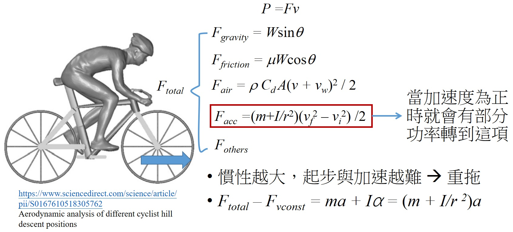

輪組的慣性及如何影響騎乘
自行車在騎乘時輪子的運動狀態稱為滾動，而所謂的滾動就是移動＋轉動。而所謂的慣性呢，就是物體會保持原來的運動狀態，也就是說移動的物體保持移動，靜止的物體保持靜止。所以牛頓第一運動定律先闡明了，若沒受到力的作用，則靜者恆靜，動著恆做等速度運動。在此的速度為有方向的量。
當把滾動分成移動跟轉動後，那麼慣性也分成了移動慣性與轉動慣性，那麼再根據力和加速度 F = ma，所以物體的質量就是移動慣性。同樣的力矩和角加速度有相同的關係 τ = Iα ，在物理中我們把轉動慣性叫做 I，又稱為轉動慣量，所以在這部影片中若你聽到轉動慣性與轉動慣量，這兩個是同一個東西。而輪子的受力來自於鍊條給的力矩，鍊條的力矩來自於我們的踩踏，所以這邊我們所關心的就是轉動慣量，其數學式為mr 2，r 為質點到轉軸的距離。所以質量大的不一定轉動慣量就大，要看距離轉軸有多遠，所以馬戲團在走鋼索時常常會拿一個很長的棍子在走，就是要增加轉動慣量。
那麼轉動慣量要如何量測呢？其實轉動慣量就是跟轉動有關，也就是跟角度的變化有關，所以我們看到圖一就是一個測輪子轉動慣量的一種方式，不過要注意這邊的 R 還包含了充飽氣後外胎的膨脹，所以是要從線到轉軸的距離。那麼我們就可以利用這邊的計算結果來和我們的模型做比較。
 |
|---|
| 圖一：量測轉動慣量 |
寫下力和力矩的方程式可個別得到
mg - T = ma –> T = m(g - a) = m(g - Rα)
TR = Iα –> m(g - Rα) = Iα
I = m(g - Rα) / α
在計算輪子的轉動慣量時我們會將輪子分成兩部分，一部分是輪框、花鼓、外胎與內胎，另一部分就是幅條，主要是因為這兩部分用到的模型會不同，前者是使用空心圓柱，另一個則是棒子。
所以我們就來使用此模型計算一下，這邊的數據就是來自剛剛那張圖，大概就是台灣賣場車的輪組與外胎，我們把數據都帶進去就可以得到此表格的結果，因為轉動慣量是跟到轉軸的距離有關，所以雖然花鼓重量比所有的幅條含鋁頭還重，但是因為離轉軸最近，所以算出來的結果其實跟所有幅條的總和還要小。再來看到輪框與外胎，因為重量重，又是離轉軸遠，所以所佔的轉動慣量比較大。那麼這樣算完之後總共的轉動傳量約為 0.1495，與這篇的實驗結果差不多。從結果可以看到，轉動慣量主要貢獻來自於輪框與外胎，所以若想要估算自己輪組的轉動慣量，可以只算輪框與外胎的轉動慣量即可。
| 幅條含鋁頭*24 | 花鼓 | 輪圈(框高10) | 外+內胎(25C) |
|---|---|---|---|
| L = 0.3 m | r = 0.03 m | r1 = 0.31 m | r1 = 0.34 m |
| m = 5 g | m = 300 g | r2 = 0.305 m | r1 = 0.32 m |
| I ~ 0.0036 kg•m2 | I ~ 0.00081 kg•m2 | m = ~1000 g | m = ~500 g |
| I ~ 0.095 kg•m2 | I ~ 0.0545 kg•m2 |
接著來看高框輪與低框輪的轉動慣量如何，我們這邊假設是碳框板輪與鋁框爬坡輪，所以假設兩個輪組的重量相同，而且重量的差異是來自於輪框，又根據前面結果，雖然幅條、花鼓可能不同，但是影響不大，所以若內外胎也是一樣，那麼差異就來自於輪框，所以可得計算結果，板輪的轉動慣量是比爬坡輪還要小的，不過若是低框碳輪，重量就會少很多，所以轉動慣量自然也會比高框碳輪小。而因為外胎規格主要是差在重量，所以就不另外計算了。
| 輪圈(框高40) | 輪圈(框高20) | 輪圈(框高20) |
|---|---|---|
| r1 = 0.31 m | r1 = 0.31 m | r1 = 0.31 m |
| r2 = 0.29 m | r2 = 0.30 m | r2 = 0.30 m |
| m = ~650 g | m = ~500 g | m = ~1000 g |
| I ~ 0.0586 kg•m2 | I ~ 0.0605 kg•m2 | I ~ 0.0372 kg•m2 |
那麼輪組的轉動慣量到底會如何影響騎乘呢？我們就從公路車的力學模型來看這件事，之前我們都討論等速度的情況，但實際情況是幾乎不可能等速度的，所以我們就看到模型的加速度效應，當我們做加速時，代表車子的合力不為 0，所以就會有力矩，此時輪組慣性的影響就會出來，所以若輪組慣性越大，重拖感就會越明顯。
|  |
|---|
| 圖二：力學模型 |
反之當原本是固定速度騎乘時突然停腳休息，那麼輪組的慣性越大，速度也就掉的越慢。但是當速度掉下來後要加速，就又會感覺到輪組的慣性了。所以可以看到這兩張圖，當加速時就是我們要多輸出瓦數，減速時就是可以抵抗其他阻力。所以當一次騎乘時，速度變動很大且常常在加速減速，那麼輪組的慣性影響就會很大。
| 參數 | 重量 W | 重力加速度 g | 坡度 | 摩擦係數 μ |
|---|---|---|---|---|
| 值 | 80 kg | 9.81 m/s2 | 0 | 0.0042 |
| 符號 | 轉動慣量 I | 氣體密度 ρ | 風阻面積 CdA | 風速 vw |
|---|---|---|---|---|
| 值 | I ~ 0.1 kg•m2 | 1.229 kg/m3 | 0.3 m2 | 0 m/s |
 |
|---|
| 圖三：結果 |